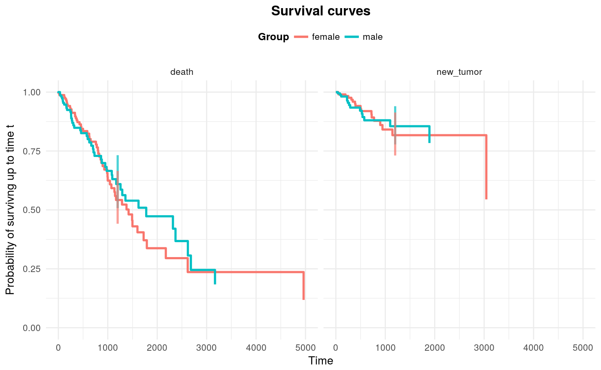

Plots survival curves for each risk and group.
plotSurvival(fit, target = NULL, ggtheme = theme_minimal(), titleSurv = "Survival curves", xtitle = "Time", ytitleSurv = "Probability of survivng up to time t", legendtitle = "Group")
| fit | a result of fitSurvival function. |
|---|---|
| target | point in time, in which the confidence bounds should be plotted (if NULL, no confidence bounds will be plotted). |
| ggtheme | ggtheme to be used (default: theme_minimal()). |
| titleSurv | a title of a plot (default: "Survival curves"). |
| xtitle | a title of x axis (default: "Time"). |
| ytitleSurv | a title of y axis (default: "Probability of survivng up to time t") |
| legendtitle | a title of a legend (default: "Group"). |
a ggplot containing n graphs, where n is number of risks. Each graph represents survival curves for given risk. One curve corresponds to one group.
ggplot ggtheme
fitS <- fitSurvival(time = LUAD$time, risk = LUAD$event, group = LUAD$gender, cens = "alive") plotSurvival(fit = fitS, target = 1200)